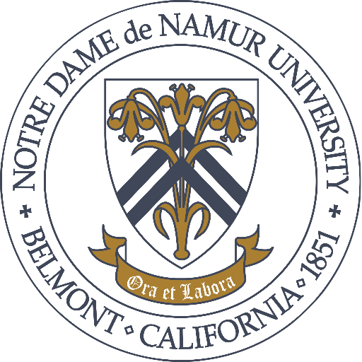

About Me
I am currently an undergraduate senior at Notre Dame de Namur University studying Computer Science.
I plan to graduate in May 2021 with a B.S. degree in Computer Science after several years of study.I am incredibly passionate
about computer science – I started off my college career planning on becoming a neurosurgeon, but quickly decided that becoming
a software engineer was my future. I transitioned into computer science through West Valley College and I am completing my degree
with Notre Dame de Namur University. Through my undergraduate studies I have become fluent in Python, and I'm experienced in Java,
web-devlopment languages such as javascript and HTML/CSS, and SQL. I've explored languages such as C++, Ruby, and Lua in previous
work and I look forward to practicing all these more in a professional environment. I have found that I am interested in
Machine Learning and AI, as well as software security within cloud computing and front-end development.
Currently,
I am looking to become a software engineer and as always I am open to any and all advice, mentoring, or pointers for the field.
Dont forget to check out my portfolio – and thanks for visiting!
Education
Attended: August 2015 – May 2017
Completed 65 Credits Towards a B.S., Neuroscience
Attended: August 2018 – December 2020
A.S. Liberal Arts: Science and Maths
Attended: January 2020 – May 2021

B.S., Computer Science